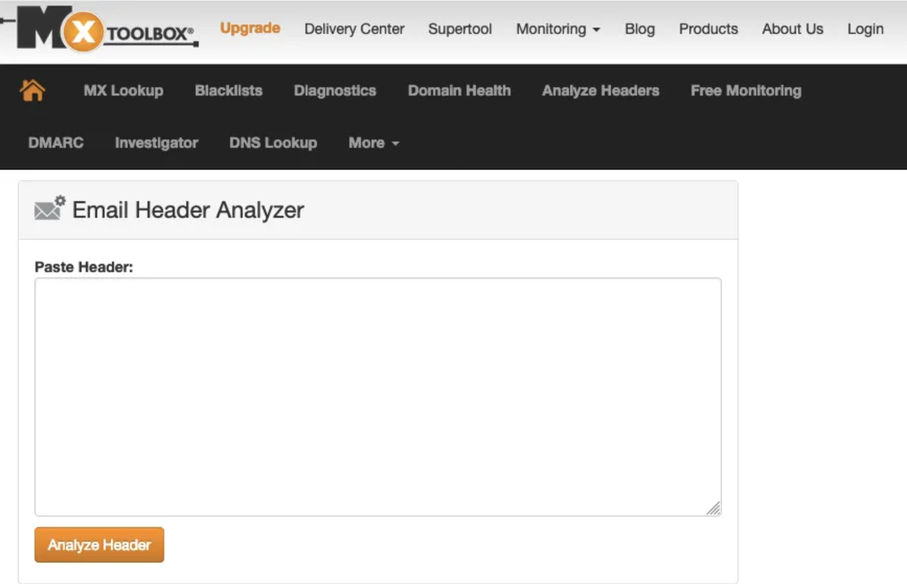
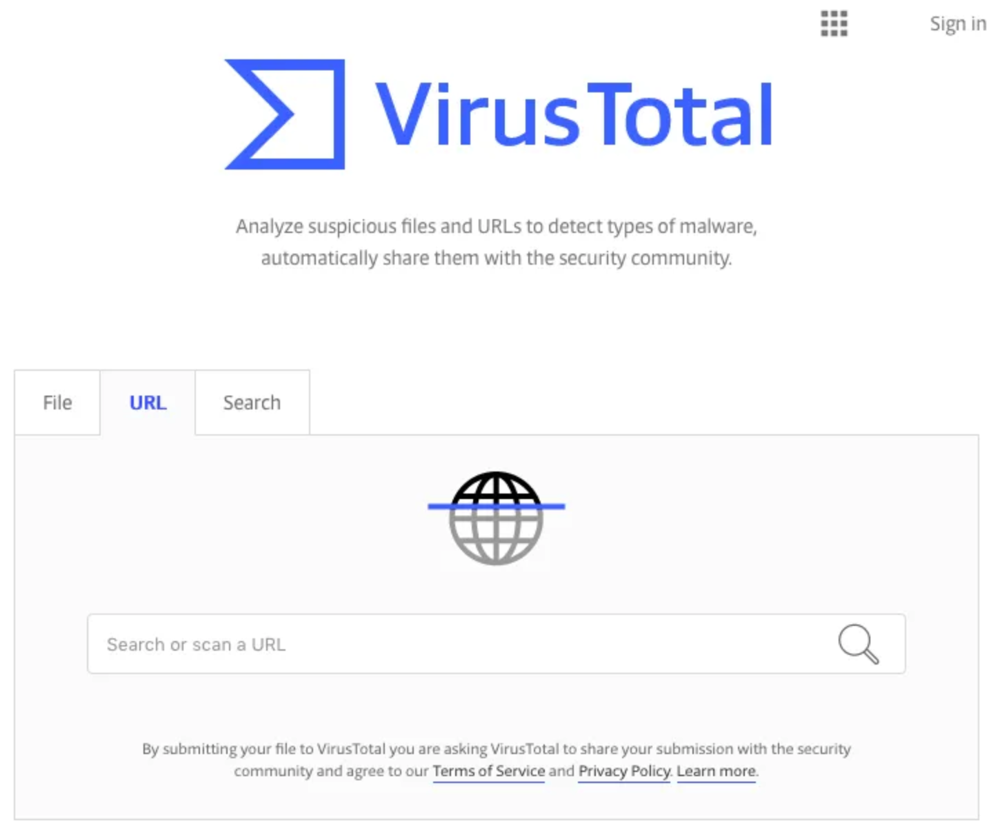
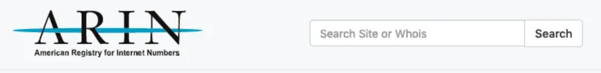
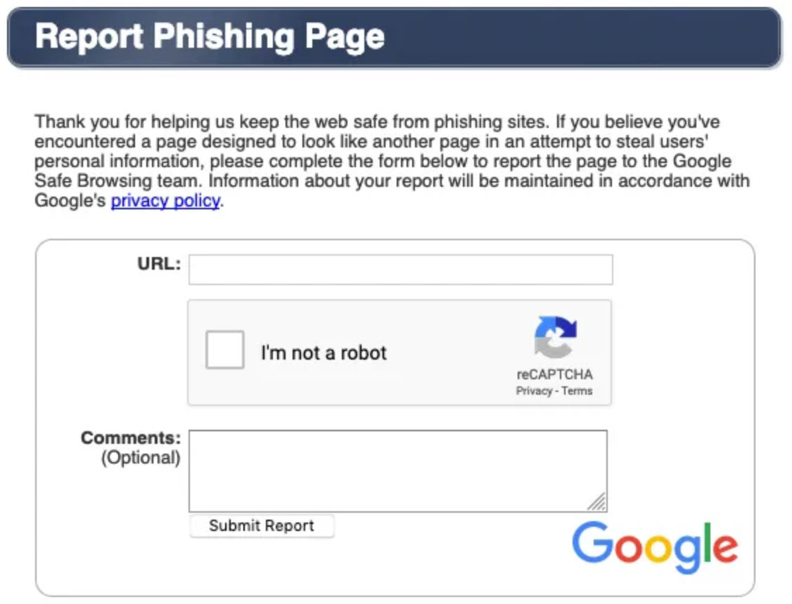

How to Handle a Spear Phishing Email
2019.04.06
Whats up! Today I thought it would be interesting to go over some general steps of handling a spear phishing
email. These are some steps I used to take at my previous job as an Infosec Specialist. I was the main one who
handled spear phishing emails. We were a small team. Maybe things have changed now, but I still think
there's some info for others to gain insight into.
* Spear phishing email - These aren't you mothers standard "You won the lottery!" phishing email, these are much
more targeted to your organization and attackers have tailor their emails to look very similar to
your organizations.
Now for argument sake, I will go through these steps assuming the following:
* there is no attachment
* you have the original email, not a forwarded email
* you know what to do once an account is compromised
* the malicious link does not use a link shortener
1. Check the Email headers
Now if you don't know how to decipher the long poetry that is an email headers, its alright, I'm here for you.
Luckily you use
MXToolBox: https://mxtoolbox.com/EmailHeaders.aspx
It's a handy website that has various useful tools you have to use. Specifically they have a Email Header
Analyzer and does checks on the mail servers, and displays the information much more understandable.

2. Check the Phishing Site
Do not go to the site directly in a browser. You're just asking for trouble. Instead check out
VirusTotal:
https://www.virustotal.com

Here you can check if the site has been reported, and flagged as
malicious. If not, it will let them know to watch out for it in case others are seeing similar traffic.
Additionally they provide you the final site, in case it redirects, and an IP which you WILL use in the
next step.
3. Find the owner of the Domain and report it to the email
You have two options here,
* Go to a terminal (don't be afraid of the terminal), and type
whois [badsite.blah]
* Alternatively, if for whatever reason you don't have a terminal option, you can go to
ARIN: https://www.arin.net/ and type in the IP of the site

ARIN is not your best option for a contact since you are bound to run into a site that is not American, but it
will give you a starting point, to which you will need to follow down the rabbit hole to find a contact.
Both options will provide you with a contact, except one is faster, and speed is important in these scenario.
Exponentially increasing compromised accounts while a spear phishing issue is happening is... NOT fun. So git
gud and use a damn terminal. You'll thank me later. Once you report the site to be malicious, the owner can
mitigate how to shut down the site.
4. Do Your Due Diligence (don't be a jerk)
Once you have reported the site, it would be a nice idea to submit the phishing site to
Google: https://safebrowsing.google.com/safebrowsing/report_phish/

And huzzah! Now you're ready! If more spear phishing emails come in with varying style or links, you just need
to repeat the process as needed.
Hope this post was helpful!
Happy securing! <3
<
>
{kind=link}
{kind=link}